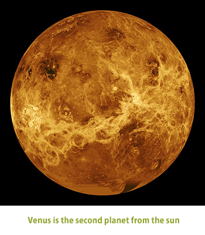

Except for the Sun and the Moon, Venus is the brightest object in the sky. The planet is called the morning star when it appears in the east at sunrise, and the evening star when it is in the west at sunset. In ancient times the evening star was called Hesperus and the morning star Phosphorus or Lucifer. Because of the distances of the orbits of Venus and Earth from the Sun, Venus is never visible more than three hours before sunrise or three hours after sunset.
When viewed through a telescope, the planet exhibits phases like the Moon. Maximum brilliance (a stellar magnitude of -4.4, 15 times as bright as the brightest star) is seen in the crescent phase when Venus is closer to Earth. Venus’s full phase appears smaller and dimmer because it occurs when the planet is on the far side of the Sun from Earth.
